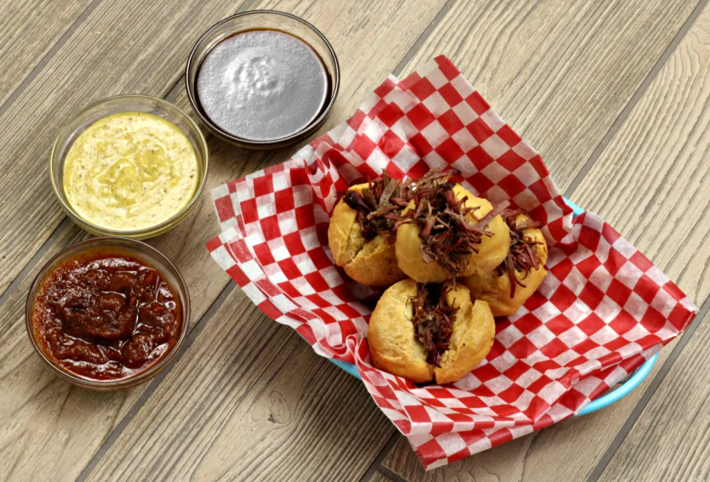

Beef Doughnuts with Barbecue Sauce
Beef Dougnuts with Barbecue Sauce

Chicken and Cheddar
Description
How could anyone combine doughnuts with pulled beef, you ask? Check out this combo!
Ingredients
Doughut Dough
- 12 oz All Purpose Flour Yes, get a scale!
- 2 Large Eggs Beaten
- 1/4 cup (Non-dairy) Milk I used soy milk to keep it kosher, but if you don't need it to be kosher you can use regular milk
- 1-1/4 oz Vegetable Shortening
- 2 Envelopes Instant Yeast
- 1/3 cup Warm Water About 110°F
- 1 tsp Salt
- 1/4 cup Sugar Optional, if you want a sweet doughnut
- Vegetable Oil For Frying. Enough to come 3" up the side of your pot.
Pulled Beef
- 1 2nd Cut Brisket or Chuck Roast
- 4 Cups Beef Stock Homemade would be best, but boxed will work in a pinch. You may not need all of it.
- 1 Carrot Peeled and roughly chopped
- 1 Onion Peeled and roughly chopped
- 3 Cloves Garlic Peeled and roughly chopped
- Salt and Pepper To taste
Steps
Doughnuts
- Add the yeast and warm water to small bowl and stir until the yeast is completely wet.
- In another bowl combine the (non-dairy) milk and the shortening. Microwave until the shortening is melted, about 30 seconds. Alternately, you could heat the mixture in a saucepan. Set the mixture aside to cool.
- In the bowl of your stand mixer, combine the yeast and water mixture, the shortening and milk mixture, the salt, and the eggs, with the paddle attachment on the "stir" setting. At this point, add the sugar if you want a sweet doughnut. Slowly incorporate the flour until the mixture forms a cohesive mass.
- Switch to the dough hook and and knead for 5 minutes.
- Move the dough to an oiled bowl and cover. Allow the dough to rise on the counter until it doubles in size.
- Divide into 12 pieces and roll each piece in to a ball a little larger than a golf ball and allow them to rise on the counter until they double in size again.
- Add 3 inches of oil to a large heavy pot or dutch oven and put on the stove over medium heat. Once the oil get to 350°F, fry the doughnuts in batches on each side until golden brown.
- Put aside to cool.
Pulled Beef
- Season the brisket or chuck roast heavily with salt and pepper.
- Add the carrots, onions, and garlic, to a large pot or Dutch oven. Place the meat on top of the vegetables. Add enough of the beef stock to cover the meat about 3/4 of the way.
- Cover the pot and place the it on the stove over medium heat and allow the meat to braise until tender.
- Once the meat is tender, remove from the pot and allow it to rest until cool enough to handle, and shred using two forks.
- Using a knife, cut a slit in the doughnuts and stuff with the meat. Serve immediately with the BBQ sauce of your choice.